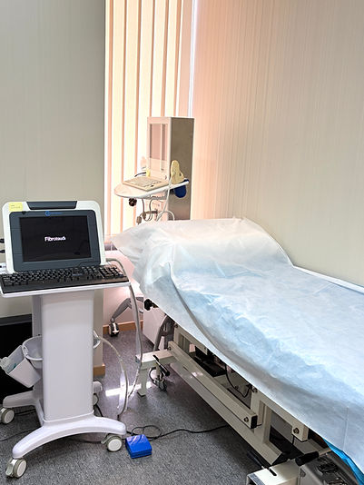
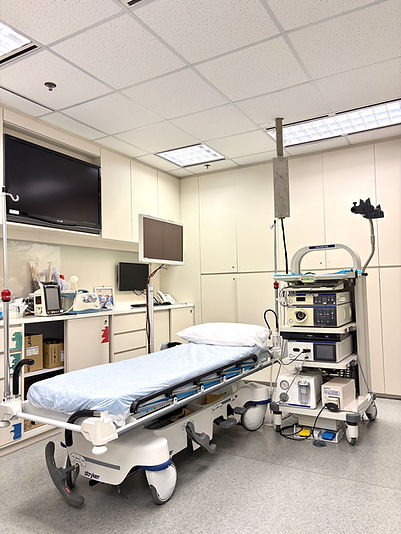
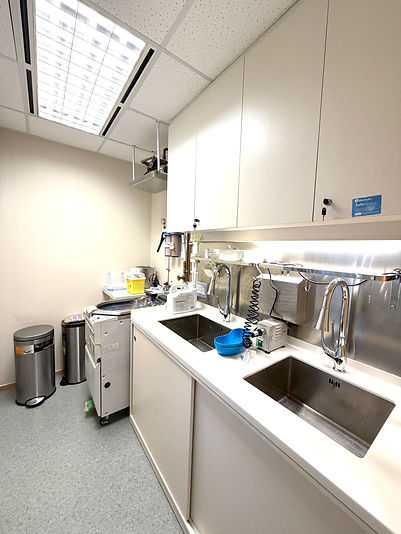
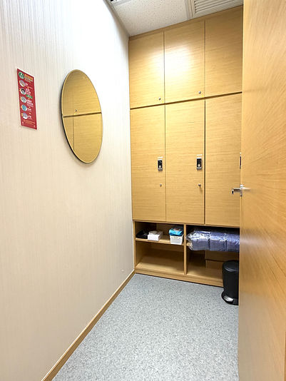

Precision medicine,
delivered with humanity.
Humanity and Health Medical Centre is located in the heart of Hong Kong, combining internationally recognised diagnostic technology with personalised care across gastroenterology & hepatology, surgery, oncology, and more.

Comprehensive medical and nursing services
Established in 2009, the Centre is equipped with advanced medical and laboratory instruments providing accurate diagnosis. We have always emphasised precision medicine, combined with personalised care, across specialties including gastroenterology and hepatology, surgery, oncology, obstetrics and gynaecology, neurosurgery, cardiothoracic surgery, and cardiology — and we continue to expand so patients can receive treatment in a quiet, comfortable environment with peace of mind. Since opening, we have continuously introduced advanced equipment, partnered with specialist doctors, and hired qualified nursing and technical staff to ensure every patient receives appropriate care.
Specialist services for the liver, digestive system and beyond
View all services →Hepatitis B Evaluation & Treatment
Nearly one in ten adults in Hong Kong are HBV carriers. The virus can cause acute or chronic hepatitis, cirrhosis or liver cancer — regular hepatitis B liver tests help ensure liver health.
Learn more →Liver Fibrosis Assessment & Treatment
Chronic liver disease keeps the liver inflamed, gradually forming fibrosis. Excess fibre accumulation progresses to cirrhosis — a main cause of liver failure and liver cancer.
Learn more →Hepatitis C Evaluation & Treatment
HCV has six genotypes, all of which can cause acute or chronic hepatitis that may develop into cirrhosis or liver cancer. Confirmed patients need regular liver function tests and follow-up.
Learn more →Liver Cancer Screening & Treatment
Liver cancer is the fifth most common cancer in Hong Kong and often shows no early symptoms. High-risk individuals should undergo liver function, alpha-fetoprotein and ultrasound checks every 6–9 months.
Learn more →Fatty Liver Disease Assessment & Treatment
Fatty liver — whether non-alcoholic or alcohol-related — shows no early symptoms but can progress to fibrosis, cirrhosis and even liver cancer. Regular liver examinations enable early treatment.
Learn more →Gastroscopy
A flexible tube enters the upper gastrointestinal tract through the mouth to check for inflammation, ulcers, tumours or internal bleeding. Tissue sampling and polypectomy can be performed if needed.
Learn more →Colonoscopy
A flexible tube examines the sigmoid, descending, transverse and ascending colon and cecum for inflammation, ulcers, tumours or lesions, with tissue sampling and polypectomy available when needed.
Learn more →Hemorrhoid Treatment & Surgery
From rubber band ligation to circumferential hemorrhoidectomy, Doppler-guided artery ligation (HAL), and bipolar vascular closure (BOWA 350 diathermy) — minimally invasive options with faster recovery.
Learn more →Hernia Repair & Intermediate / Minor Surgery
Surgical treatment of inguinal and wound hernias, plus tumour removal, partial organ removal, chest, heart and neurosurgery, body remodelling and palliative procedures.
Learn more →Advanced diagnostics, monitored end to end
From preparation to examination, the whole process is strictly monitored by dedicated doctors and nurses, with a dedicated staff member following up with every patient.
One-stop Endoscopy Centre
Our centre is equipped with an advanced endoscopic imaging system, and the nurses and technicians involved have received professional training — providing one-stop endoscopic examination and treatment.
NBI Narrow Band Imaging
By filtering out longer-wavelength red light and retaining blue and green light, micro-blood-vessel changes — even mucosal tissue and colour changes that were previously hard to detect — are shown clearly, helping locate lesions or cancer early and accurately.
HDTV High-Definition Image Processing
The Endoscopy Centre uses the advanced Olympus CV-290 HDTV image processing system together with the Olympus GIF Type H260 endoscope, significantly improving image quality for clearer, more accurate diagnosis and treatment.



Dr George Lau
Dr Richard Choi
Dr Patrick Lau
Dr Chan Chun Kwong, Jane
COVID-19 Vaccination Programme
Citizens can make an appointment to receive the vaccine at our private clinic vaccination station, or book directly with participating doctors and clinics, for the Sinovac or Pfizer-BioNTech vaccine. Eligible Hong Kong residents (aged 6 months to under 18, or 50 and above) can choose to receive a free influenza vaccination at the same time at designated sites.
Private Clinic COVID-19 Vaccination Station
CENTRAL — 9 Queen's Road Central, Room 1401–02
by Humanity & Health Medical Centre
-
☎
Reservation phone
+852 2861 3777 -
✆
WhatsApp
+852 9742 3389 -
✉
Email
info@hnhmgl.com -
⌖
Address
Room 1401–02, 9 Queen's Road Central, Central, Hong Kong
Clinic Hours
| Monday – Friday | 9:00 am – 1:00 pm · 2:00 pm – 6:00 pm |
| Saturday | 9:00 am – 1:00 pm |
| Sundays & Public Holidays | Closed |